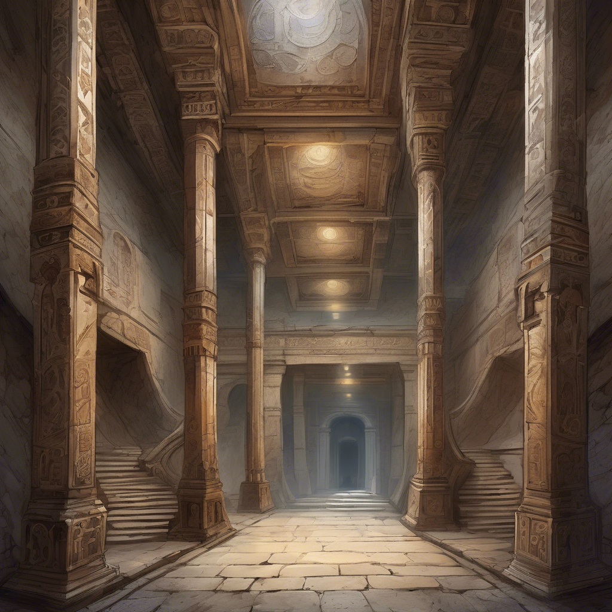

A titkos ajtó mögött egy keskeny kőlépcső kanyarog lefelé, a mélybe. A léptek alatt finom por száll fel – régóta nem járt erre senki. Végül egy hatalmas, boltíves terem nyílik ki előtted. A mennyezet csupa lángmotívum, a padlót izzó rúnák díszítik. A terem közepén, egy lebegő oszlopon ott pihen a Tűzkorona. Fénylő, szinte élő láng veszi körül – mintha a tárgy maga is lélegezne.
Ha megpróbálod felvenni: menj a 10-es bekezdésre.